Watanyoo Putta (วทัญญู พุทธา)
Medical Researcher & Biomedical Innovator
Current Status
Base: Khon Kaen, Thailand
Local Time (Asia/Bangkok):
Guiding Principle
“True success is not in the learning, but in its application to the benefit of mankind”
— Prince Mahidol of Songkla (Father of Modern Thai Medicine)
Embodied daily through biomedical innovations, tropical medicine research, and prehospital emergency care in Khon Kaen and rural Thailand.
Featured Honors & Innovation
National Research Council of Thailand (NRCT)
Innovation Award 2026 Winner
Recognized for developing rapid, point-of-care diagnostic biosensors targeted at snake venom detection, dramatically improving prehospital emergency outcomes in rural Southeast Asia.
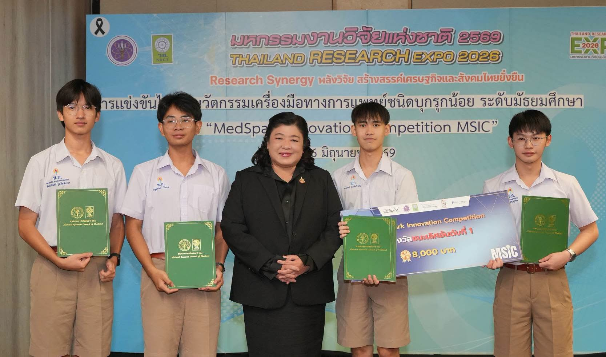
Verified Registries
Cryptographically linked professional network nodes.
One Health Professional Certificate (OHPCP)
Specialization in Disease Surveillance
Southeast Asia One Health Workforce Academy (SEA-OHWA)
Completed rigorous Foundation courses developed by the Veterinary Public Health and Food Safety Centre for Asia Pacific (VPHCAP CMU) in collaboration with SEAOHUN, funded by Chevron.
Khon Kaen Field Research & Station Map
Interactive GIS telemetry and field study locations across Khon Kaen, Thailand.
Academic Publications
-
Effects of Industrial Noise on Mental Health: A Case Study in Khon Kaen
Published: 2026 | Persistent ID: DOI 10.5281/zenodo.23219819
Independent study analyzing physiological and psychological impacts of urban industrial noise levels on local communities in Khon Kaen. Available via Zenodo open-access repository.
Clinical & Research Domains
Specializing in parasitology, microbiological analysis, and the development of robust infectious disease diagnostic methods for resource-limited settings.
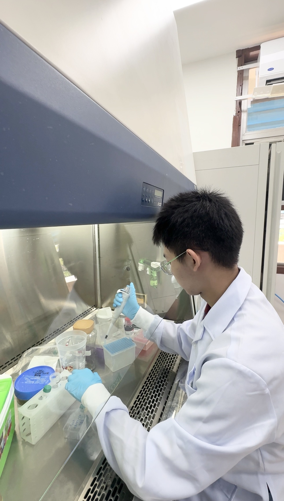
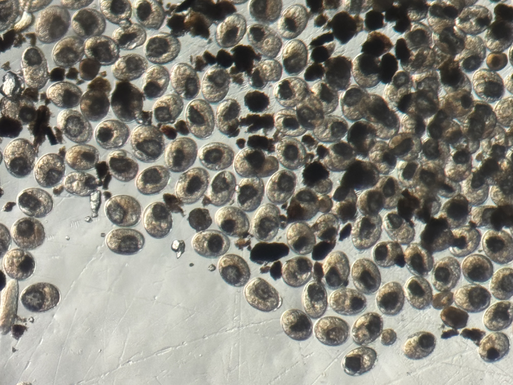
Active first aid responder collaborating with the Thai Red Cross, focusing on prehospital emergency care optimization and field triage protocols.
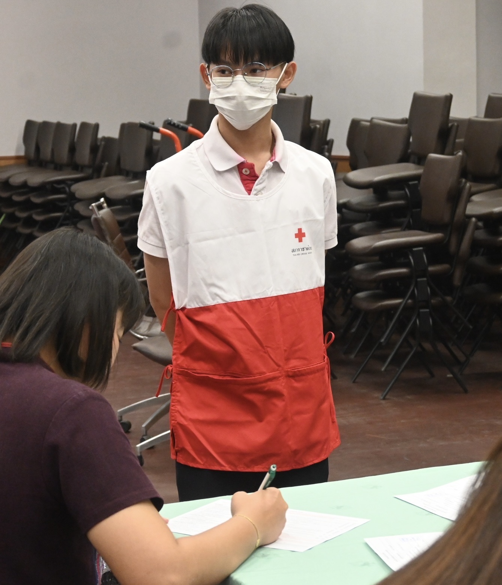
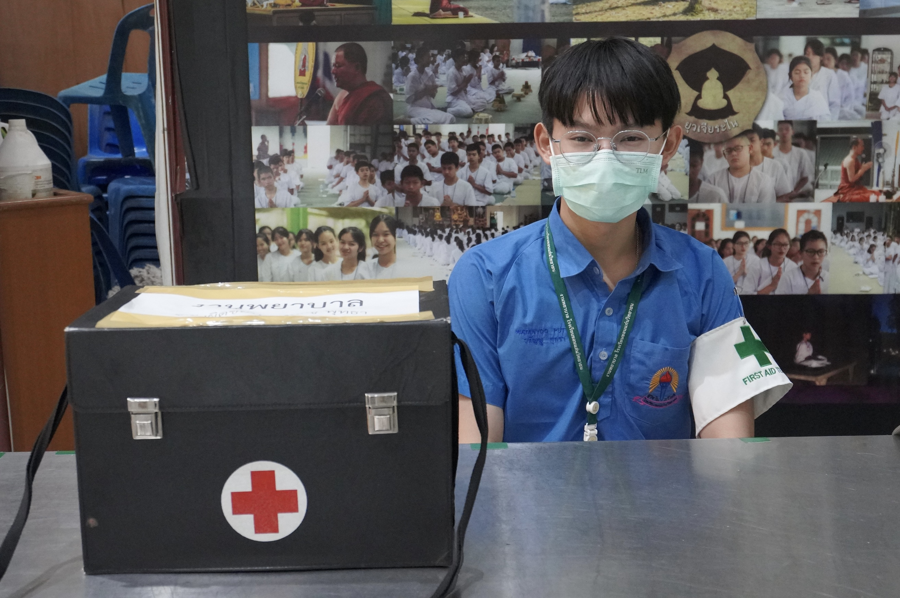
Field Research: The Lawa Model
On-the-ground epidemiological fieldwork and community health engagement integrating rigorous academic research with active local intervention strategies.
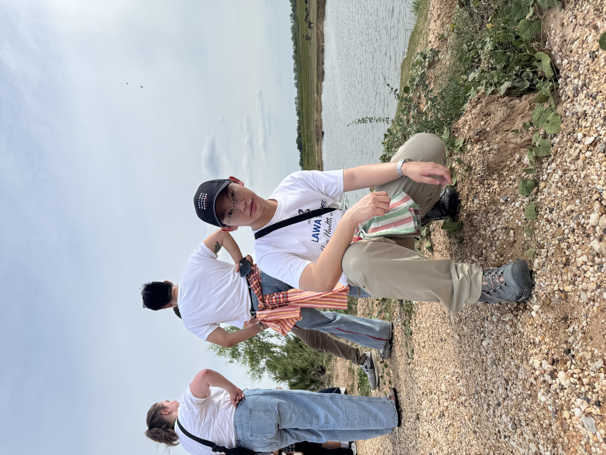
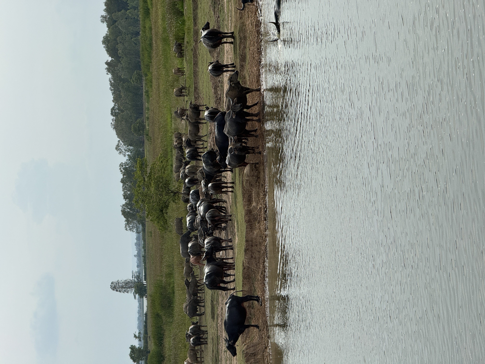
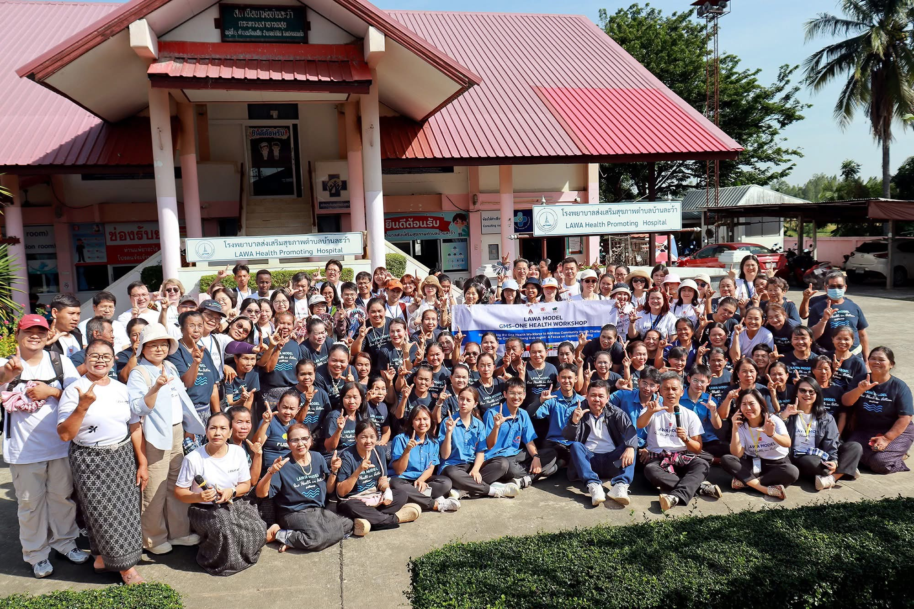
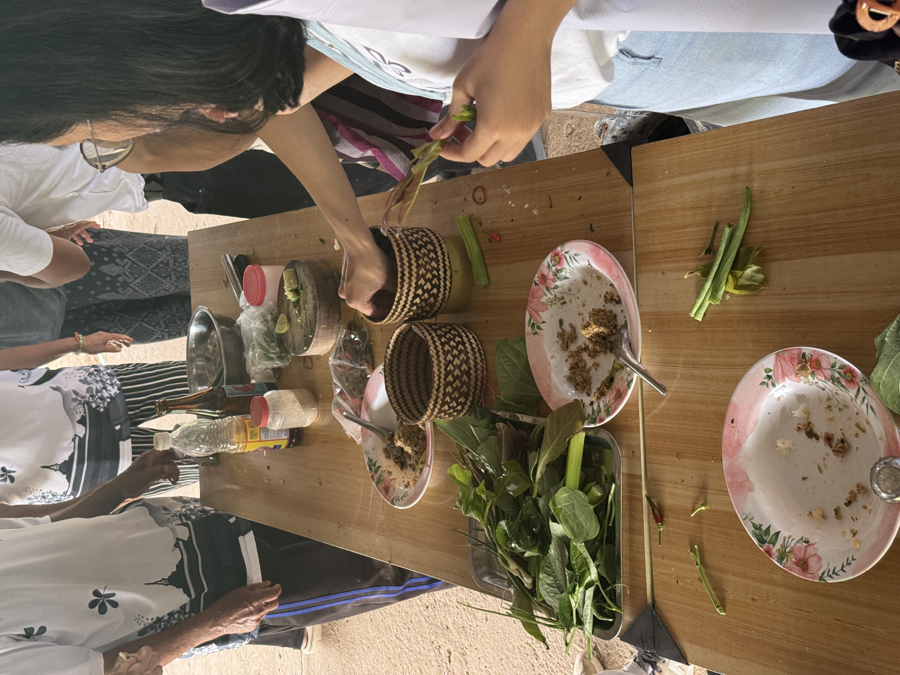
Disaster Comms
Amateur radio operations (Callsign: E25ZVB) coordinating emergency logistics and live responses to structural fires and disaster zones.
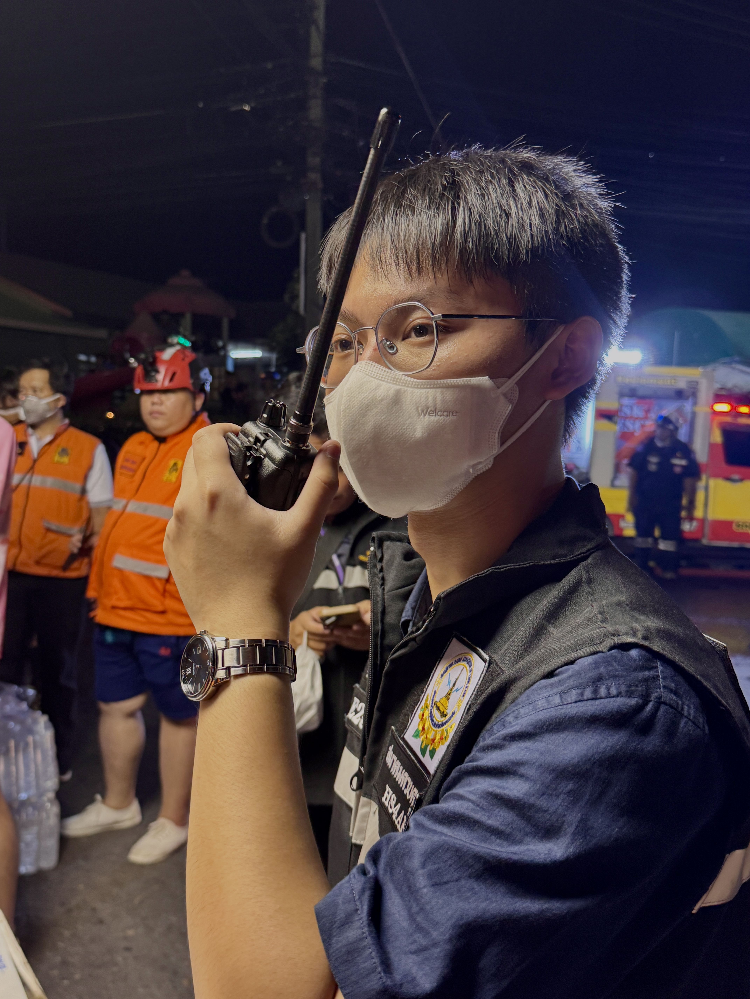
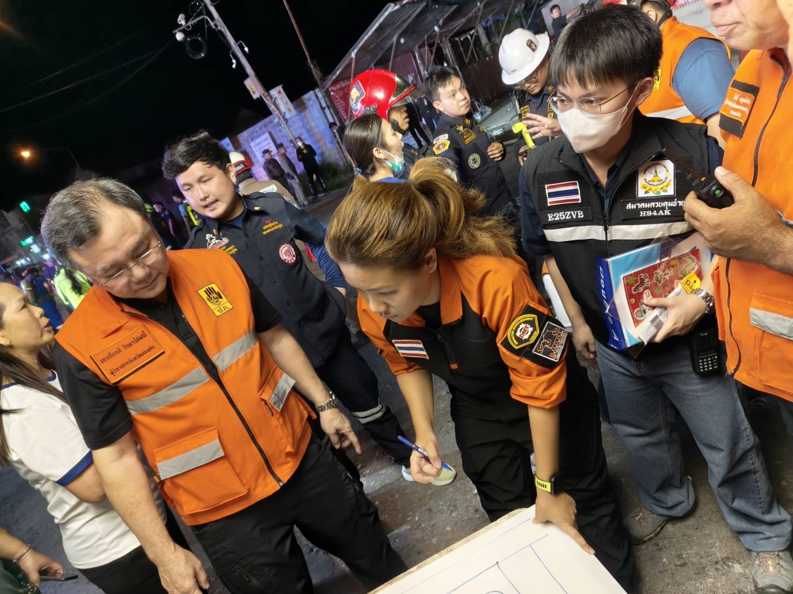
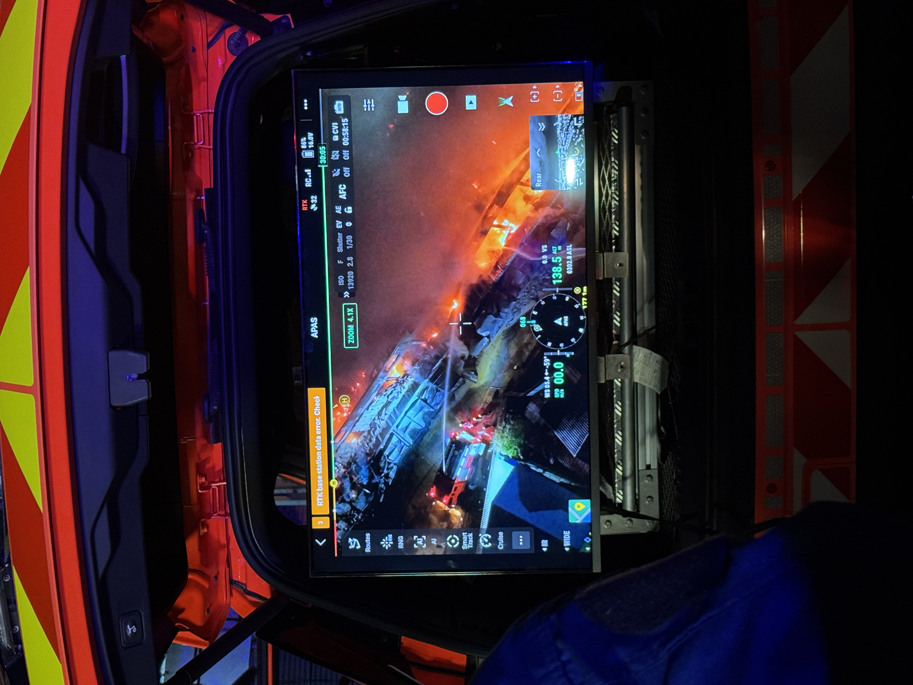
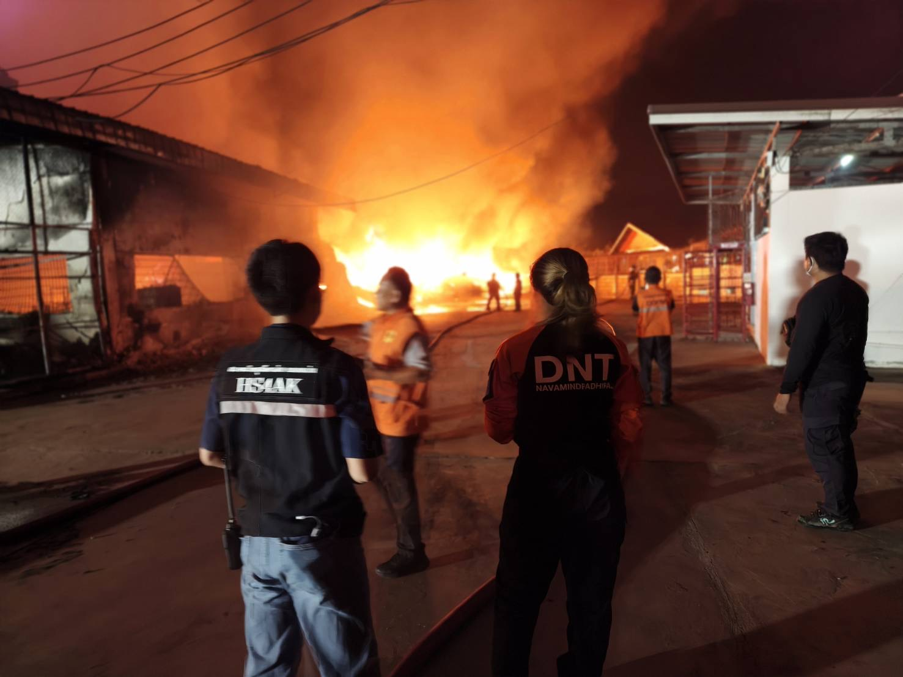